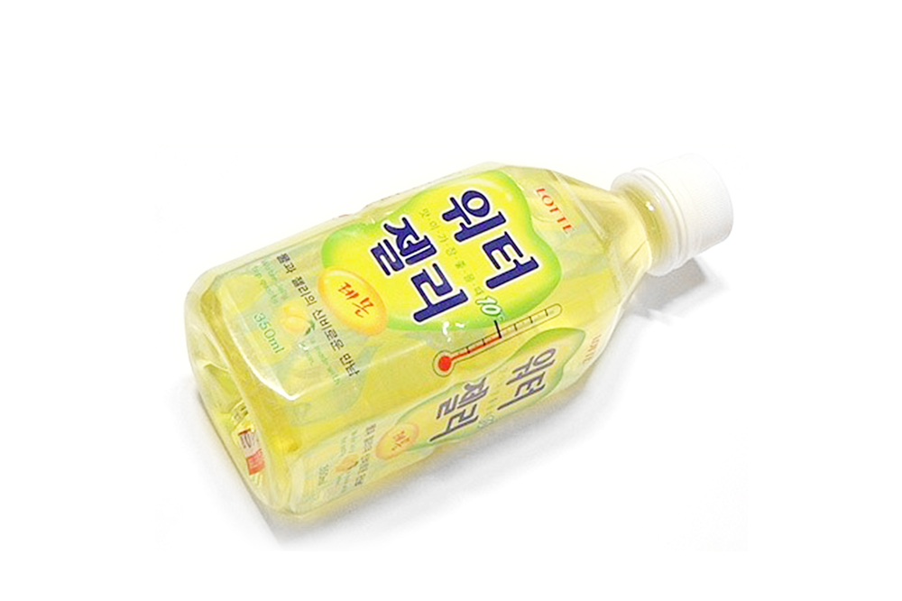

단종된 간식 소개
목차
- 단종된 과자
- 단종된 음료수
- 단종된 아이스크림
단종된 음료수
쿠우
술자리에서 한번 쯤은 들어봤을 법한 노래.
"맛있는 건 정말 참을 수 없어, 누구든 맛을 보면 이렇게~ 쿠우~" 바로 쿠우 광고다.
김빠진 환타맛이 나지만 당시 인기 오렌지 음료였다.
광고영상
깜찍이 소다 시리즈
해태음료 ‘깜찍이 소다’ 캐릭터가 당시 90년대 청소년층 사이에서 매우 인기였다.
음료 광고에 나온 ‘깜찍이, 깜찍이, 깜찍이’ 노래를 모르면 간첩일 정도로 흥행했다.
광고영상
헬로 팬돌이
당시 전국 초등학생들의 소풍 필수 아이템. 어른들 소주 마시듯이 팬돌이 뚜껑에 음료를 따라 홀짝 마시는 행위가 유행했다.
꼭 여자는 핑크, 남자는 블루를 마시는 게 암묵적 규칙이었다
아미노 업
포카리스웨트와 비슷한 맛이 나는 음료수. 단 것 같지 않은 단맛과 신 것 같지 않은 신맛이 나는 밍밍한 맛.
권상우형이 날 속일 줄은 몰랐다. 어른남자의 세계란 이렇게 애매모호한 것이구나.
광고영상
워터젤리

쁘티첼 젤리를 음료처럼 마시는 느낌! 복숭아, 레몬 맛의 물컹물컹한 젤리가 들어있는 젤리워터